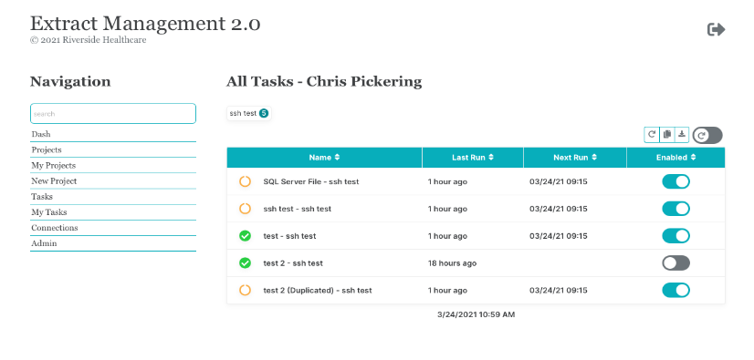

Extract Management 2.0¶
{kind=link}
Extract Management 2.0 is a task scheduling tool for getting data from a source and depositing it in a destination - sql servers to SFTP servers.
Tasks can run at any time and on any schedule.
Checkout the demo site! Or, you can run your own docker image:
docker run -i -t -p 5003:5003 -e PORT=5003 -u 0 christopherpickering/extract_management:latest
# access on http://localhost:5003
How To Use?¶
EM2 is a three part server:
web app
scheduler
job runner
EM2 runs with Nginx + Gunicorn. Three individual web services are created, the web app is the public web site and the other two (scheduler and runner) are internal API’s running on the web server.
Prerequisites¶
Currently EM2 is setup to install on an Ubuntu server, however with a few tweaks to the install script it will work well on most Linux.
curl or wget should be installed
Ideally, you will have your own git repository, holding updated config files, and will publish from there.
Installation¶
An install script is provided to easily install EM2 onto your Ubuntu server. Update the publish/install.sh file “dns” value to be the dns of your server, and the “remote” to point to your repo path. If you plan to use ssl you can add the certs into the publish folder as well. Use names “cert.crt” and “cert.key”.
The publish takes place over SSH from a git server. It is possible to use an accesskey when publishing from fabric.
Update username and hostname with your planned login. Commands require sudo. sudo bash...
Method |
Command |
|---|---|
fabric |
|
curl |
|
wget |
|
After cloning the repo the install.sh script will install all packages necessary to start up the app.
Running EM2 Locally¶
EM2 can be run locally. We use pyenv and poetry to manage the project dependencies. Assuming you will too -
pyenv local 3.9.0
poetry install
# have you already created a database "em_web_dev" and updated the config files?
FLASK_APP=em_web
flask db init
flask db migrate
flask db upgrade
flask seed
# if you want some basic demo information added
flask seed_demo
Finally, to run the three site, you will need to run each command in a separate termimal session:
FLASK_ENV=development && FLASK_DEBUG=1 && FLASK_APP=em_web && flask run
FLASK_ENV=development && FLASK_DEBUG=1 && FLASK_APP=em_scheduler && flask run --port=5001
FLASK_ENV=development && FLASK_DEBUG=1 && FLASK_APP=em_runner && flask run --port=5002
Other Configuration Tips¶
If you use hostnames vs IP addresses in your config files be sure to update hosts file nano /etc/hosts to include the ip address of any internal domain hosts you will use. For example, LDAP server, GIT server, any databases you plan to query, etc.
About the App¶
How Login Works¶
Login is done through LDAP and follows this basic process Note: the python package python-simpleldap has been customized slightly to work with our ldap setup.
config.py file holds the general connection info. A connection to the ldap server is made with the user credentials supplied in the config file.
Once a connection is established and a user attempts to access the site the simpleldap package first verifies that the user exists, by doing a search for the user. If the user exists we save their details and groups.
If the user exists then we attempt to log them in.. this returns true if they had a valid username/pass.
Finally, as this site is restricted to Analytics group users, we only allow users that have the “Analytics” group on their profile.
Note
once logged in the user_id is kept in the server “session”. When a user logs out we just drop the user_id from the session.
Data Flow¶
Project name and schedule are created > tasks can be added to the project.
Task are completely independent, the order of tasks is not respected and tasks may run in parallel. The purpose of allowing multiple tasks is to keep a clean grouping of tasks that belong to the same data project.
The tasks in a job can individually be started or stopped.
Webserver Info¶
EM2 uses three web services for a few reasons -
Splitting the UI from the running tasks improves the user experience
The scheduler must run on only 1 web worker, while we would like as many workers as possible for the runner.
API’s are cool.
In the EM2 admin screen there is an option to retart the web services. For this option to work you may need to give you webapp user sudo permission, or:
sudo visudo
# add this line to the end.. assuming the webapp usergroup is "webapp"
%webapp ALL=NOPASSWD: /bin/systemctl daemon-reload
%webapp ALL=NOPASSWD: /bin/systemctl restart *
If you will have “long running” tasks, it may be wise to increase the nginx timeout. (Gunicorn timeouts are already increased in the app install files.)
# open nginx config
sudo nano /etc/nginx/nginx.conf
# add these in the http secion. all for good luck...
fastcgi_connect_timeout 999s;
proxy_connect_timeout 999s;
proxy_read_timeout 999s;
Credits¶
Atlas was created by the Riverside Healthcare Analytics team -